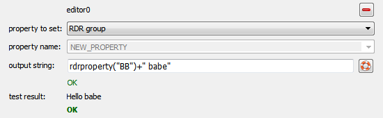

$$qf_commondoc_header.start$$ $$qf_commondoc_header.end$$
User Interface
In many cases it is desireable to set the raw data records properties (name, filder, group, ...) from other data available in the RDR. The menu entry $$bqtt:Tools | project tools | calculate RDR properties$$ opens a dialog, which allows to set some RDR properties using the internal math expression parser.
- First select the RDRs in which to set properties
- Now you can add any number of items to the list on the lhs. Each item sets one property in the selected RDRs. In each item you can set:
- the property, which should be set and if it is a property with a free name, also its name. the type is determined by the return value of the expression
- a math expression parser, which calculates the new value of the property. You cann use all default functions&variable of the parser and a set of special functions/constants, which allow to access the properties of the current RDR:
The default functions are:
$$insertglobal:parseref.inc$$
- Each item contains a small
 -button, which allows to remove it from the list.
-button, which allows to remove it from the list.
- Finally you have to select all those RDRs in the list on the rhs (by checking/unchecking the checkbox next to the RDR name), to which the items should be applied.
- A click on OK will apply the items to all selected RDRs, yb first applying the first item to all RDRs, then the second, ...
Examples
The item

will set the RDR group, by reading the property BB and adding the string " babe".